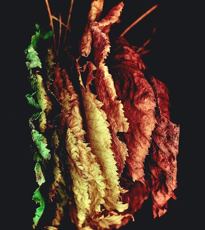

Learning and Collaboration
Four Pillars
The primary educational experience at Yale is centered on the student’s own studio activity. Students are also offered support for careers/internships. These experiences provide excellent networking opportunities.
Complementing this enterprise are the experience, knowledge, and skills gained from rigorous, structured courses such as drawing, filmmaking, the relativity of color, and the rich academic offerings found throughout Yale.
Each student is routinely exposed to many aesthetic positions through encounters with faculty members and visitors. Faculty and students also engage in many kinds of interdisciplinary collaborations, such as those with the Yale School of the Environment.
Building on a long history of social engagement through art is the are the global initiatives offered through the Art in the World program. This offers opportunities for inspiring creative cultural exchanges.

Forest Reflections: A Story of Climate Sen-trees
The fruit of an interdisciplinary collaboration is now a touring multimedia art exhibition.
Spearheaded by Yale School of Art faculty member Sasha Baker-Jones and MFA student Harris Sutherton, Forest Reflections promotes awareness of the multifaceted impacts of climate change on trees globally, and the ways it affects wildlife and agriculture.
Paintings, photographs, sculptures and digital media depict the effects of drought, fire, floods, insects and disease, as well as trees’ resilience and adaptability.
Support Us